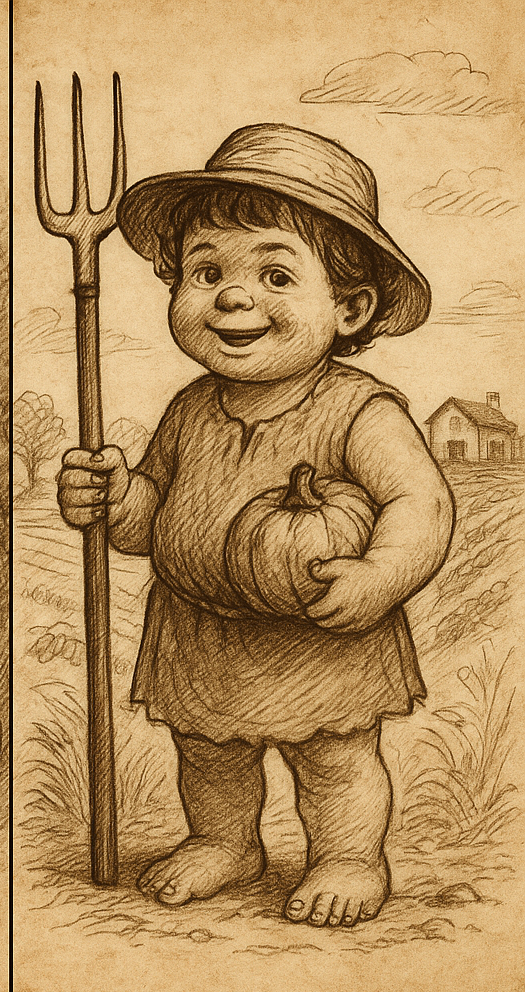
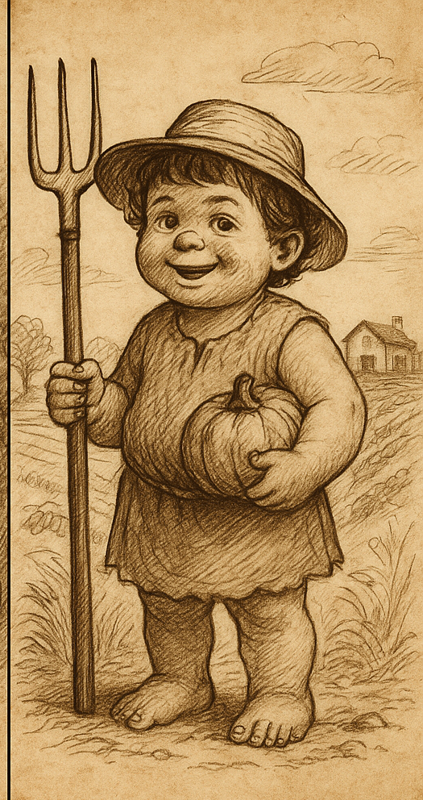

קציצי
| שם מדעי | Homo carbo-lacticus |
|---|---|
| ממלכה | בעלי חיים |
| מערכה | מיתרניים |
| מחלקה | יונקים |
| סדרה | פרימטים |
| משפחה | הומינידיים |
| סוג | הומו |
| מין | הומו קציצי |
| תזונה עיקרית | פירות 🥭 פחמימות 🍞 יוגורט 🥛 |
| מצב שימור | תלוי־יוגורט |
קציצי (Ktzitzi, שם מדעי: Homo carbo-lacticus) הוא תת-מין אנושי ממשפחת ההומינידים, המאופיין בחיבה עזה לפחמימות, מבנה גוף מסיבי, חיבה לקשר משפחתי חם, ורגישות עיכולית ייחודית. קציצי נחשב יצור אינטליגנטי, רגשי, נאמן וחברותי הנוטה לציית לכללי החברה מתוך אהבה לזולת ולמשפחה.
היסטוריה והתפתחות
התפתחות המין קשורה ליכולתו לבנות מסת שריר מפחמימות בלבד, תוך שימוש במיקרוביום מעי מותאם במיוחד 🍌.
מורפולוגיה
- מבנה גוף גדול וחזק
- צפיפות עצם גבוהה – נפילות לא נחשבות פגיעה
- רגליים וישבן מפותחים 🍑
אבולוציה והשערות מדעיות
על פי מחקרים, הקציצי התפתח מאוכלוסיות אדם קדומות שחיו באזורים עשירים בפירות ויוגורט. מתועדים שלושה שלבים אבולוציוניים ידועים:

 

תכונות אופי
- רגשי, חיבתי ונשיקתי 😘
- אינטליגנציה גבוהה והתמצאות רגשית
- נאמנות משפחתית גבוהה 👨👩👦
- ציות לכללים מתוך אהבה ואכפתיות
טבלת תזונה קציצית משוערת
| רכיב | כמות יומית מומלצת לקציצי | הערות |
|---|---|---|
| יוגורט | 1–3 מנות | מקור עיקרי לסידן; מעלה מצב רוח קציצי. |
| פירות | 2–5 יחידות | כולל בננות אבל לא רק; לשמור על גיוון. |
| פחמימות מורכבות | 3–6 מנות | לחם, דגנים, פסטה, מאפים ביתיים. |
| חיבוקים | 10–40 ליום | רכיב חיוני להתפתחות רגשית ומטבולית. |
| נשיקות | ללא הגבלה | תורמות לחוסן המין וליציבות מערכת העצבים. |
| זמן הורי צמוד | גבוה במיוחד בשנים הראשונות | קשר עין, ישיבה על ברכיים ושיחה רגועה. |
| שינה | בהתאם לגיל | רצוי מלווה בשקט יחסי ובביטחון משפחתי. |
רגישות מעיים
יציאות בתדירות יצירתית 🔔💩 תלויות בסוג היוגורט.
בתרבות המשפחתית
יצורים שמחים, מחבקים ומצחיקים. ״קציצי לעולם לא אוכל לבד — אלא אם זה בננה״ 🍌.
פרטים בני־זמננו ידועים
“קציצי 1” – תשבי
בעל ניסיון, חיוך רחב, ויכולת לשאת ציוד רב מבלי לבקש עזרה.
“קציצי 2” – צור
מאופיין בצורך באהבה של אבא.
“קציצי 3” – נוני
צעיר, סקרן, שקט — אך מוכן לפליטה בכל רגע.
ראו גם
- אדם מודרני
- מיקרוביום מעי
- יוגורט
- "ננה" (בננה)
- שוקולד זה לא בריא
- Daddy Shark to do do do
⚠️ כל הפרטים בערך זה מוצגים כדמויות בדיוניות ולא מתארים איש אמיתי.